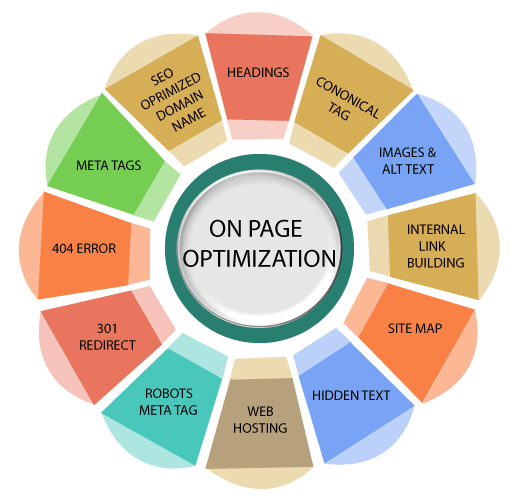

What is On-page SEO

On page optimization refers to all measures taken by SEOs within the website to improve the ranking of a site in search engine result pages. These measures are related to content and HTML source code of a page, e.g., meta tags, keyword placement, and keyword density including the technical set-up, the content, and user-friendliness of your site. So, on page seo optimization factors are linked with the elements of your website.
So, in on page seo, you deal with all the elements of SEO that you can control. For example, a website owner can control the technical issues, meta tags, and quality of the content of the site. On page seo issues are in your control so that they should be resolved without any delay to improve rankings in search engine result pages.
There are many on-page seo factors that can help your site to rise higher on SERPs. Some of the most important On-Page seo factors are as follows:
1. Keyword in the Title tag: Title tag tells the search engine and users about your content. It provides an accurate description of the content, which makes it an important relevancy signal for a search engine. So, one can incorporate relevant keywords in the title tag that represents your content and thus can assist search engines and users in understanding what they are going to read and accordingly to improve its ranking.
2. Keyword in meta description tag: It is a summary or snippet of your page, which is displayed on search engine result pages below the URL. You may include your keywords in this and make it make more relevant, appealing, and informative to search engines and users and thus can get more click on your link.
3. Keyword in the H1 tag: It is also a relevance factor that introduces your page or acts as a description of your page. So, you may also include your main keywords in the H1 tag to improve its ranking.
4. The length of the page: Today, the users don't get satisfied with basic information; instead, they want to be educated by reading all the possible information about a topic. The search engine, therefore, prefers lengthy pages to rank first as the longer pages can cover more aspects of your topic.
5. Canonical Tag: You should use the canonical tag when you have two URLs with similar content. This tag prevents the issue of duplicate content as it tells Google that one URL is equivalent to another, so the two pages with the same content are not different pages and they belong to the original page.
6. Image Optimization: Along with the text, images should also be optimized by using alt text, caption and description, and more. Furthermore, don't name your image as 'image1.jpg' instead use descriptive filenames, for example, 'woman-driving-car.jpg.'
7. Content Updates: Search engines prefers freshly updated content. So, keep adding more information to the site and update the old pages if required.
8. Outbound Links: You can use outbound links to send users to another website if you want to provide more information. So, it can be a trust factor for Google. However, using too many outbound links many affect the rankings, so use them in moderation.
9. Internal Links: You can interlink your pages so that traffic from a one may be diverted to other pages which are less clicked by the users.
10. Keyword in URL: The URL should contain the keywords as it is also a way to send a relevancy signal to search engines.
11. Sitemap: You can create a Sitemap for your site. It helps search engines to index all pages on your website, which is a part of SEO.
12. Google Search Console Integration: You can verify your site at Google Webmaster Tool. It provides you valuable data to optimize your size.
13. Content of Page: The content of the page should be of good quality, relevant, and latest. Furthermore, it should supply the largest demand, which means it should be related to highly searched topics, keywords, etc.
14. Linkable Content: This type of content is crafted with the objective of attracting links generally from other websites in your niche.
15. Content Formatting: The content should be readable and organized, which you can achieve through different ways.
16. Images and Multimedia Elements: The images make your content more appealing and presentable, so add images to your content if possible. However, do not add images unnecessarily or too many as it may leave a bad impression. The images should not be very large as it may increase the loading time of your page, which is not good for SEO.
17. URL Optimization: You can optimize a URL in two different ways: URL optimization and URL structure.
18) URL Structure Optimization: The URL structure should reflect the actual structure of a website. You can optimize it by making categories that help users and search engines find the content with ease. A website without categories is like a warehouse with unorganized items, and with categories, it looks like a warehouse where items divided into different categories.
19) Internal links: Interlinking the web pages of a website is very important for SEO. It allows you to create your own web or network. A search engine spider follows the links found on a page, both internal and external links. If a page lacks links, the spider will read your page and go. It also helps keep users on your site for a long time.
20) External Links: External links can be used for SEO as they allow you to link your site to other high-quality related websites, which makes your site more trustworthy, which is good for SEO.
21) Page Loading Speed: Search engines always keep putting efforts to make the web faster. It prefers to include the fastest websites in its index, which is good for a site in terms of SEO. It also helps with customer retention and conversions.
22) Mobile Friendliness: With the increase in mobile internet users, around 60% searches in Google are generated through mobile devices. So, a website, which is not mobile-friendly, maybe losing half of the potential traffic.